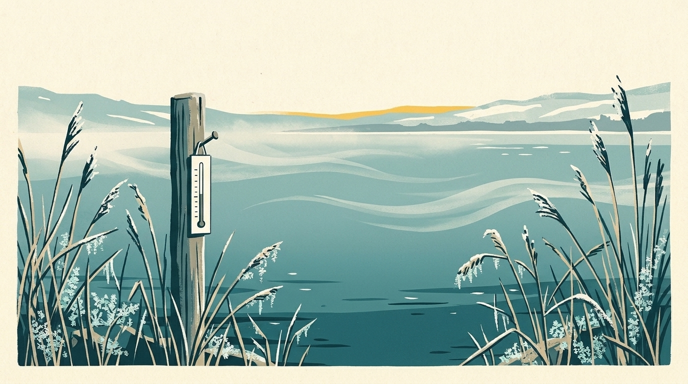

In short
The sources do not all say the same thing. A 2025 meta-analysis of healthy adults finds better sleep quality and quality of life after cold-water immersion, but no effect on mood, with few trials and small samples. The insurer Helsana writes that brief cold stimulates circulation, reduces stress and lifts mood. A landmark review concludes that the strength of evidence varies with the claim, some resting at the level of anecdote.
What does the research show?
A systematic review and meta-analysis published in 2025 in PLoS One pooled trials of cold-water immersion in healthy adults. It finds improved sleep quality and quality of life, but no effect on mood. Its authors stress that the evidence remains limited: few controlled trials, small samples, little diversity among participants.
A landmark review, “Cold water immersion: kill or cure?” (Experimental Physiology, 2017), reaches a conclusion of the same kind: the strength of evidence varies with what is claimed, and for some claims it remains at the level of anecdotal speculation. It also lists the first seconds in the water, the “cold shock”, among the most hazardous moments.
What a Swiss insurer says
In its winter-swimming guide, Helsana writes that studies confirm that brief cold stimulates the cardiovascular system, reduces stress and lifts mood, and that studies and accounts suggest cold-water swimmers catch fewer colds. These are indications: on mood, the meta-analysis above finds no effect.
What can honestly be said
- Many people say they feel good after a cold dip. That feeling is real to them; on its own it does not prove a measurable effect.
- Sleep and quality of life are the two outcomes where a recent meta-analysis sees an effect.
- Claims about immunity, metabolism or depression rest on thinner evidence; we do not repeat them here.
Who should avoid it
Graubünden Ferien reminds readers that icy-water bathing is for healthy people: it is discouraged for high blood pressure, diabetes, and heart or vascular disease, and if in doubt you talk to your doctor first. Helsana says the same for cardiovascular problems and for anyone who feels unsure. And you go with someone.
To start without scaring yourself: a 4-week programme, breathing in cold water and the first 90 seconds. The current water temperature, beach by beach, is in the app.
Lake Geneva’s water right now
Each beach’s water temperature is in the My Lake app, updated every three hours.
Disclaimer. This article gives general information taken from the sources cited; it is not medical advice. Cold-water swimming puts real strain on the heart and can be dangerous: talk to a doctor before you start, especially with a heart condition, high blood pressure or during pregnancy. Never swim alone and follow lifeguards’ instructions. You swim at your own risk; in an emergency, call 144 in Switzerland or 112.